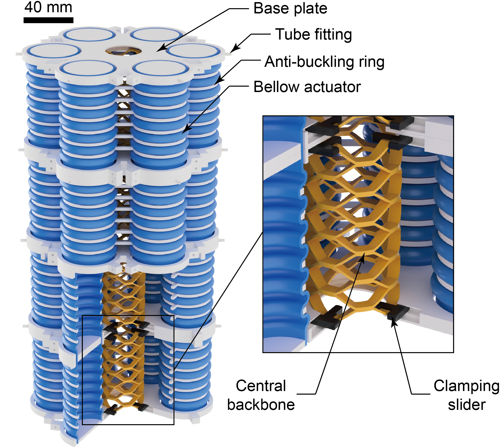
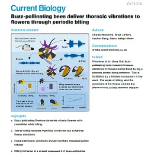
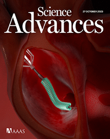
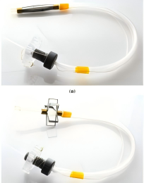

Ph.D. Student in Mechanical Engineering
University of Massachusetts Amherst
I am a Ph.D. student in Mechanical Engineering at the University of Massachusetts Amherst and work with Prof. Gina Olson. My research focuses on soft robotics, compliant mechanisms, and mechanically intelligent structures. Before begining my Ph.D., I received my Master's degree in Mechanical Engineering from Boston University, and Bachelor's degree in Engineering from Tianjin University of Science & Technology (TUST).
My work explores the design of soft robotic systems, pneumatic soft actuators, variable stiffness, and structural reinforcement for soft robots.

A structural reinforcement of soft robotic arms for improved stiffness and load-bearing capability while preserving their deformation and actuation capabilities.

Constructed a millimeter-scale soft robotic platform that can deploy and self-stabilize inside the beating heart, providing dexterous and stable guidance for minimally invasive cardiac interventions.
Jacob Rogatinsky, Dominic Recco, Joseph Feichtmeier, Yuchen Kang, Nicholas Kneier, Peter Hammer, Edward O’Leary, Douglas Mah, David Hoganson, Nikolay V Vasilyev, and Tommaso Ranzani
Science Advances, 2023

Developed a bio-inspired robotic platform that mimics the periodic biting and thoracic vibrations of buzz-pollinating bees, enabling controlled investigation of how these vibrations are transmitted to flowers during pollination.
Charlie Woodrow, Noah Jafferis, Yuchen Kang, and Mario Vallejo-Marín
Current Biology, 2024

Designed and evaluated a soft bracing mechanism that stabilizes surgical instruments against the motion of the beating heart, improving tool positioning and force application during minimally invasive cardiac interventions.
I am always happy to discuss research, collaboration, and opportunities in soft robotics.